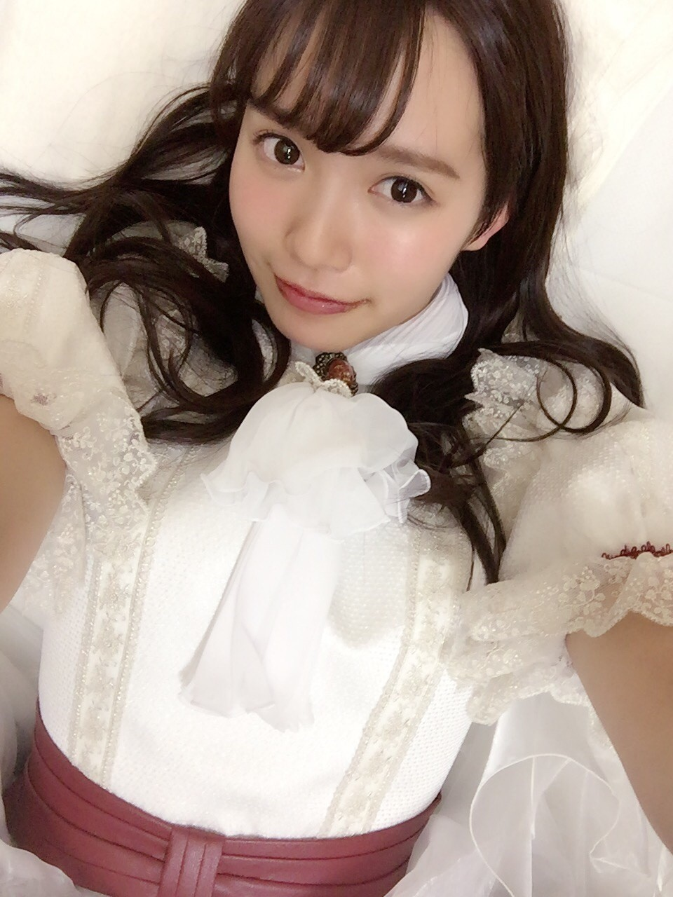
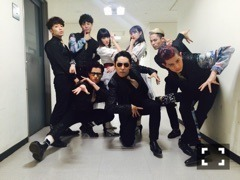
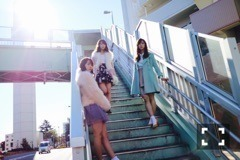

| 2017/01 05 Thu | 中元日芽香 ひめたん-0o0-その692 |
新年あけましておめでとうございます。
2017年もどうぞよろしくお願いします(^o^)
今年の目標は
広い意味合いを込めて
妥協できるようになること。
自分や周りの人、
ついてくる結果に対して
許せる優しさを持つことかな。
余裕というより優しさ。
心の広さというか。
結果より経過を大切に、
プロセスを認めてあげられる
人間になりたいなと最近思っていて。
頑固って時にプラスに働くこともあるけれど
今の私はマイナスにしか変換できない
残念な使い方をしているので
厳しさ、意地、プライド。
そういったものを少しだけ
捨てられるようになりたいです。
あくまでポジティブなニュアンス。
少し無くしたって0にはならないからね。

さて、大晦日は紅白歌合戦でした！
35人での「サヨナラの意味」は壮観であり、
歌詞の意味とかいろんなことを考えて
リハで泣きそうになりました。笑
本番は去年ほど緊張することなく
のびのびと歌ったよ～(^o^)
個人的な感想は、
今年の始めにラジオで言ったことが
叶ったのが嬉しかったかな。
ここでは文章にしないけれども。
言った時は確固とした自信はなくて
ふわっとした願望だったけれど
今になってあの時
言葉にしてくれた自分に感謝です。
過去の出来事も全部繋がってるんだな～
RADIO FISHさんにご挨拶できて
オリラジ兄さんたちとお話しできたよ！
ホッとしました。すごく。
現場バタバタしていたので
また今度ゆっくりお話ししたい～～
CDTVは毎年テレビで観てたので
スタジオにいるのが嘘みたい～すごい～と
ずっと万理華に言ってた。笑
昨日は美彩先輩のお誕生日でしたね。
おめでとう～～！
ひめたんは世話好きとして有名ですが
美彩先輩の前では甘えん坊。
相談事をしたり、
私のズボラな性格を心配させてしまったり、
ずっと背中を追いかけていたい
存在でもあります。
素敵な一年になりますように♡

1/7 BOMB発売です！
北野、ちはる、中元の3人。
全員同い年～
あひゃ、もう成人式なのね。
日経エンタ アイドルspecial 2017
よかったらチェックしてみてね～
全員のインタビューが毎年楽しみ。

この衣装、好きー！！！！
(＊´・ω・＊)